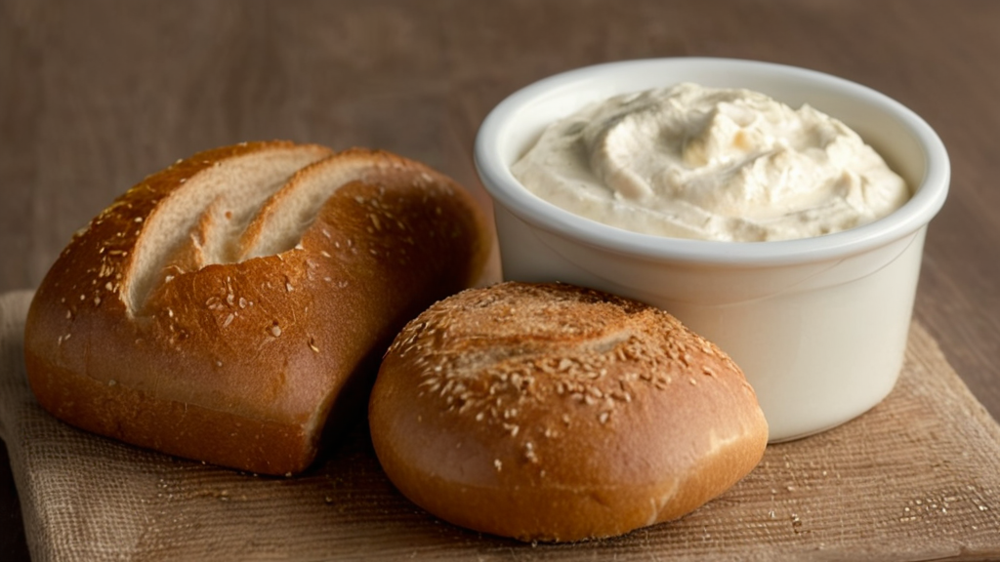

Hozzávalók:
- 2 db padlizsán
- 2 gerezd fokhagyma, apróra vágva
- 2 ek olívaolaj
- 1 ek citromlé
- Só ízlés szerint
- Frissen őrölt fekete bors ízlés szerint
- Friss petrezselyem vagy koriander levél apróra vágva (opcionális)
Elkészítés:
- Melegítsd elő a sütőt 200 fokra (180 fok, ha légkeveréses).
- Moss meg alaposan két közepes méretű padlizsánt, majd szúrj a héjába néhány lyukat egy villával.
- Tedd a padlizsánokat egy sütőpapírral bélelt tepsibe, majd süsd őket előmelegített sütőben kb. 45-50 percig, vagy amíg a héjuk megpuhul és a belsejük összeesik.
- Miután elkészültek, vedd ki a sütőből, és hagyd őket kihűlni néhány percig.
- Miután kihűltek, vágd fel a padlizsánokat hosszában, majd kanalazd ki a puha belsejüket egy tálba.
- Adj hozzá a kanalazott padlizsánhoz két gerezd apróra vágott fokhagymát, 2 evőkanál olívaolajat és 1 evőkanál frissen facsart citromlevet.
- Ízlés szerint sózd és borsozd meg, majd villával pépesítsd össze az összetevőket, amíg egy krémes állagot nem kapsz.
- Kóstold meg, és szükség esetén ízesítsd még.
- A padlizsánkrémet tálalás előtt hűtsd le a hűtőben legalább egy óráig.
- Tálald friss petrezselyem- vagy korianderlevéllel megszórva, és kísérd friss zöldségekkel, pita kenyérrel vagy krékerrel.